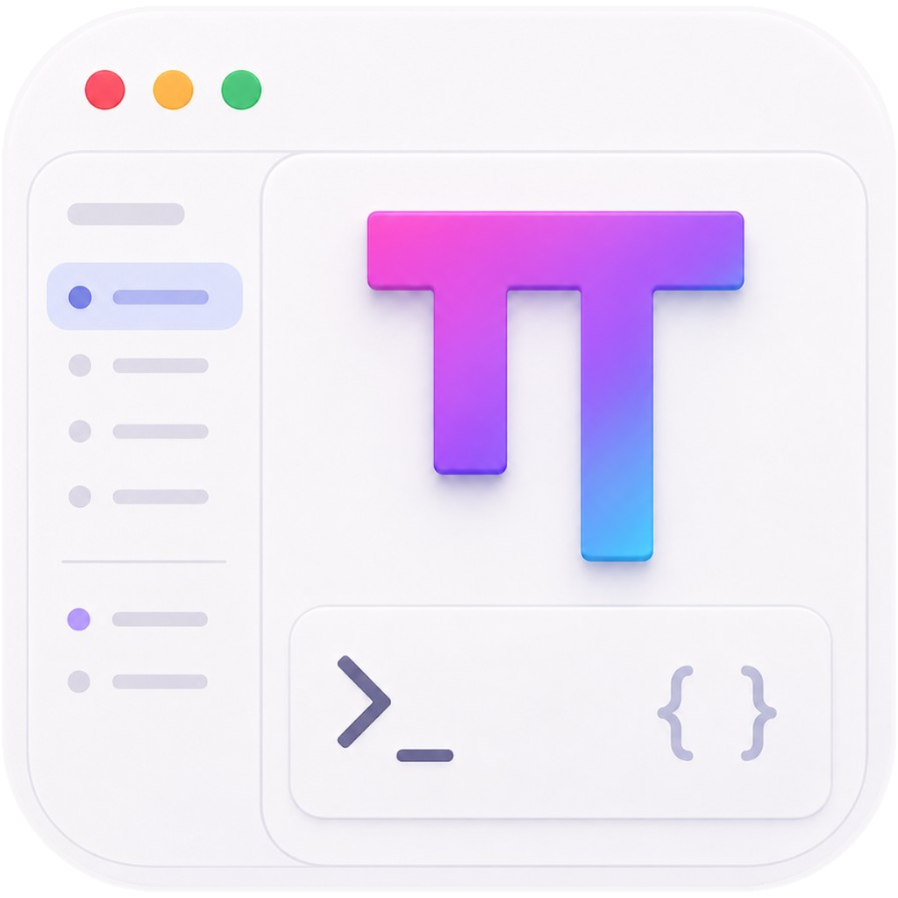

OMP Studio 安装向导 · 视觉原型 720 × 480

OMP Studio 安装 v1.4.2
欢迎使用 OMP Studio 安装向导
本向导将在你的计算机上安装 OMP Studio 1.4.2，随附内置 OMP 运行时、原生 PTY 终端与 Agent / MCP 扩展支持，安装完成即可使用。
内置 OMP 运行时
随应用一并安装与升级，无需手动配置开发环境。
原生 PTY 终端
低延迟渲染，完整支持转义序列与真彩色输出。
Agent 与 MCP 扩展
连接模型与工具链，按需扩展工作台能力。
安装完成
OMP Studio 已成功安装，运行时与扩展组件均已就绪。
安装位置C:\Program Files\OMP Studio
产品版本OMP Studio 1.4.2 (x64)
内置运行时OMP Runtime 1.4.2 · PTY · MCP
取消安装
确定要退出 OMP Studio 安装向导吗？安装尚未完成。
已安装相同版本
本机已安装 OMP Studio 1.4.2。可以修复当前安装，或退出向导。
Enter 下一步 · Esc 取消 · 左上切换安装情景 · 主题在右上
动效 标准 · prefers-reduced-motion 已适配